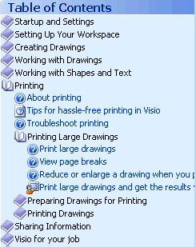

In DITA, the sequence and hierarchy of the topics to be published
are defined in the
ditamap through nested
topicref elements.
A topic-based document architecture relies on a device to bind the
topics together into a structured output publication. A Help system is a good
example of a topic-based document architecture. The binding device in Help
systems is called the
Table of Contents, or TOC. The
TOC is used by the author to choose the topics that will be
included in the publication, and the order in which they will be presented in
navigation. In most Help systems, the
TOC is also presented to the reader as an expandable and
collapsible tree of links, which the reader can use to navigate through the
document.
Example of a Table of Contents (from a Help file)

Being topic-based, DITA also needs a TOC-type device to bind
collections of DITA topics together, and the
ditamap is used for that purpose. The ditamap not only
specifies what topics are to be included in the output, but specifies the
sequence and hierarchy of the topics through nested
topicref elements
organised
into a tree structure.
When DITA is transformed into a Help format, the ditamap is used to
derive the appropriate
TOC file. When DITA is transformed into a page layout format
such as PDF, the ditamap is used to derive the Table of Contents and the
heading styles in the output content.